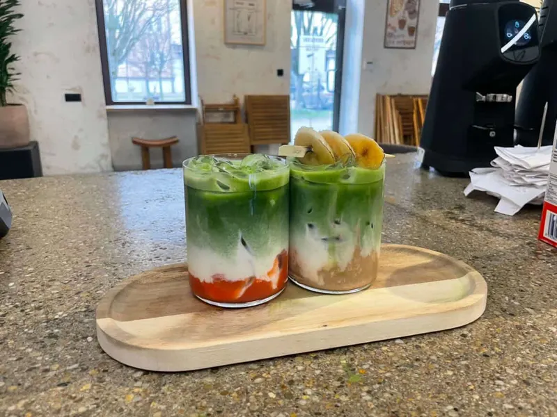
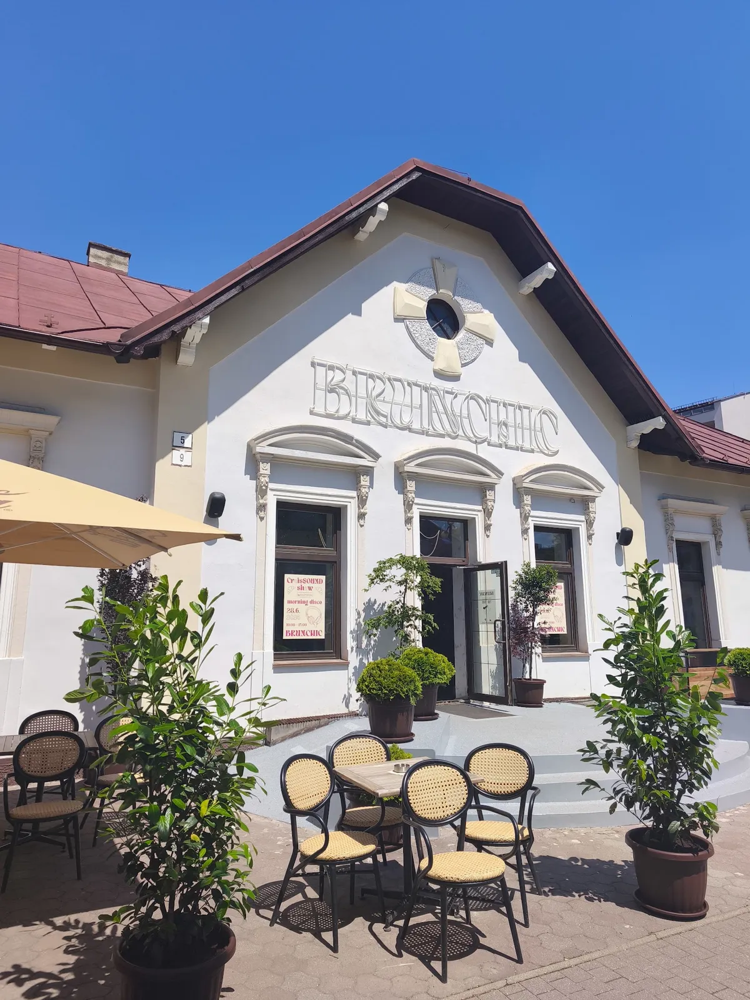
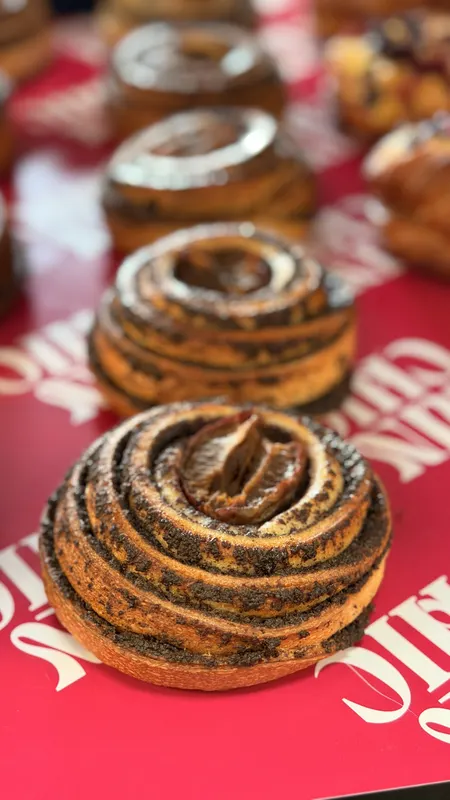
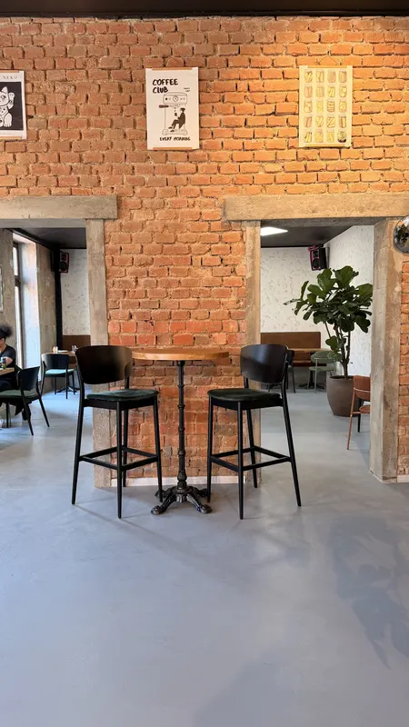

Matcha, ktorá sa fotí sama
Coconut cloud, blue coconut, piña colada, lavender alebo pistachio. Trinásť druhov v pohári s objemom 340 mililitrov.
Toto je ukážkový návrh webu pre Brunchic Poprad. Pripravil mrazosoft.sk. Obsah aj fotky pochádzajú z verejného profilu podniku, nič nie je vymyslené.
Brunch, výberová káva, trinásť druhov matchy a domáce koláChic priamo na námestí. Otvorené sedem dní v týždni už od siedmej rána.


Coconut cloud, blue coconut, piña colada, lavender alebo pistachio. Trinásť druhov v pohári s objemom 340 mililitrov.

Plnené croissanty, zapekané toasty a sladké aj slané pečivo. Celú ponuku nájdete priamo v prevádzke, mení sa podľa dňa.

Priestor na stretnutie, kurz aj oslavu. Pet friendly, s terasou priamo na námestí a parkovaním hneď vedľa.
DJ párty, workshopy a komunitný beh. Program vypisujeme na každý mesiac.
Párty na začiatok školského roka. Všetci študenti majú zľavu desať percent.
Ich vlastný plagát z Instagramu.
Spoločný beh, ktorý štartuje od Brunchicu. V septembrovom kalendári je vypísaný na 2., 9., 16. a 23.
Z ich nástenného kalendára na Instagrame.
Večer s DJ-om priamo v podniku. V auguste tu hrali DJ Tom, DJ Wallky, DJ Schnappi a DJ MYMA.
Z ich nástenného kalendára na Instagrame.
Tvorivé doobedie s keramikou. V auguste bol vypísaný na ôsmeho.
Z ich nástenného kalendára na Instagrame.
Maľovanie v priestore Brunchicu. Hostia ho spomínajú v recenziách.
Recenzia na Google: „Šla som tu na kurz maľovania a je skvelé, že máme konečne v Poprade takýto nový priestor, kde sa môžu ľudia stretávať a vyskúšať si aj niečo nové.“
„Nádherne a prijemne prostredie, siroky vyber zakuskov a skvela matcha, a sú petfriendly, to povazujem za velke plus.“
„Absolútna spokojnosť. Krásne moderné priestory, kde som sa hneď cítila veľmi príjemne. Šla som tu na kurz maľovania a je skvelé, že máme konečne v Poprade takýto nový priestor, kde sa môžu ľudia stretávať a vyskúšať si aj niečo nové.“
„stylova prevadzka v centre popradu, hned pri parkingu s fajnym pecivom dobrou a kavou. mily staff.“
Námestie svätého Egídia 5/9
058 01 Poprad
Každý deň 7:00 do 19:00
Mapu načítame až po kliknutí, aby stránka nesťahovala nič z Googlu zbytočne. Otvoriť v Mapách Google